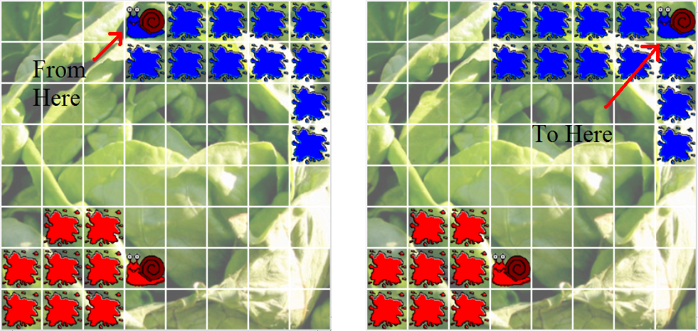
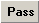
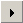
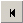
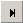
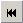
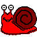
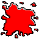

1. The object of the game is to occupy (leave your Slime in) more of the GridSquares than all of your opponents when the game ends.
2. Players take turns to move. A player turn consists of moving a Snail horizontally or vertically to an adjacent empty square.
3. Moving into an empty GridSquare leaves your previously occupied GridSquare with a trail of your slime. SPLAT!
4. Not only can you move into empty squares, but you can move back onto your own Trail of Slime. This has a disadvantage, however; your Slime is slippy, and any move back onto your Slime will send you sliding to the furthest point on that Trail in the direction you moved (fig. 1). This may be useful for getting some missed GridSquares, or ones that were previously unavailable.
5. You can not, however, move onto your opponent's Trail of Slime. As the colours suggest your opponent's Trails are toxic, making them impassable. Your opponent, also cannot move into a GridSquare occupied by your Trail. Use this to your advantage!!
6. If you make 10 moves in a row without capturing a new empty GridSquare, (i.e. just keep sliding around on your slime for 10 moves) then your game ends, but your opponent can still move, until his/her 10 moves are up.
7. When both players have finished moving, or cannot capture any more GridSquares, the game is over and the player with the highest score (most GridSquares captured) is the winner.
When a terrain file is loaded the user is said to be in 'Play mode' and when a replay file is loaded the user is said to be in 'Replay mode'. If a user is in Replay mode he can choose to swap over to 'Play mode' starting from the current position (and discarding all turn information except for the current board state). There is no way to change from 'Play mode' to to Replay mode (apart from saving a repay file). The difference between these two modes is that in play mode new turns are expected from human and AI players, but in replay mode you simply step forwards and backwards through a replay file. Stepping backwards in play mode causes the currently turn to be 'destroyed' effectively undoing the turn (which .
 Pass: Pass can
be used by a human player to skip his go. Play mode only.
 Play: Starts
the game or continues it if it is currently paused.
 Step back: This
can be used to step backwards one turn at a time. This control has slightly
different behaviour in play or replay mode. When a user is in play
mode clicking this button will destroy all information for the previous
turn (and step back). When the user is in replay mode this button will simply
take the user to the previous turn, and no turn information is lost.
Pause: This
pauses the game (!).
 Step Forward: In
play mode, this causes the next AI player to take a turn. If the next player is
human then the button has no effect. In replay mode this can be used to step
forward to the next turn. When the last turn of the replay file is displayed
the turn box (5 above) will display "Game Over".
Record: This
button does not do anything when you click on it, but it contains a context
menu which you can access by right clicking on the button. In play mode the
context menu has 2 options, 'Save as Terrain' and 'Save as Replay', in replay
mode there is only the 'Save as Terrain' option.
 Rewind: Rewind
is used in similar ways in both play mode and replay mode, it rewinds the game
to the first turn, but in the case of play mode it destroys all the turns that
have been made in this game, whereas in replay mode it simply puts the users at
turn 1 without destroying any turn information.
This displays a scrollable list of all players in the current game and some
information about them. This information is their Player ID and name, what type
of player they are (Human or AI) and their current score.
If the user left-clicks on the player button with that players graphic on, they
will bring up that players trace (in the case of a human player there is no
trace information).
Right clicking on the button will bring up a menu which will alow users to load
either a user-created AI player, the default AI player or a human
controlled player. If a human player is loaded, users may right click on the
human players name and enter a new name for that player.
a. To enter terrain editing mode you must click on this button.
Be very careful when you do this, as clicking this button will cause all the
previous turn information to be deleted for the current game, although the
current board position is retained.
b. From this drop down menu you can select a set of default
values for the board such as width and height, they can either be for the
current board or the default board or (if you have alter any of the values in
the controls) you can use custom terrain values. When you select an option from
the drop down, fills in values for the controls in the terrain editor.
c. This is where you can give your map a name. It will appear
in the title bar when you load it in.
d. This control lets you set the number of player that are
allowed on a board.
e. This sets the width of the board in grid squares. The
current maximum is 200.
f. This sets the height of the board in grid squares. The
current maximum is 200.
g. This sets the width of an individual gridsquare in pixels.
The current maximum is 200.
h. This sets the height of an individual gridsquare in pixels.
The current maximum is 200.
If a very large grid size and a large grid square size is chosen, you will be
warned of the possibility of a system slowdown or crash - but all reasonable
sizes, up to around 200x200 with 20x20 pixel squares, should work on a powerful
PC.
i. The grid lines separate all the squares so that individual
grid squares can be seen, this controls sets the thickness of those lines. If a
thickness of zero is chosen then the gridlines will not be displayed.
j. This sets the colour for the grid lines. Just hit browse
and a colour picker will appear, select the colour from that.
k. This control allows the user to select a directory where
the user has created custom graphics. Once the path is set from the browse
button, the new graphics will be loaded into the game. Custom graphics must
have exactly the correct names. For Infectious! these are: 1ActiveColony.bmp,
1PassiveColony.bmp, 2ActiveColony.bmp, 2PassiveColony.bmp, ... for player
pieces; Impassable.bmp for impassable squares; and Background.bmp for the large
background image.
l. This is the update terrain values button, once you press
this a new empty board will be created and all player pieces that are on the
current board will be discarded.
m. This button allows the user to save any
graphics currently loaded for player or terrain pieces. This directory
will become the graphics path for this terrain.
n. This control allows the user to save this terrain file as
usual.
o. These are the Terrain and Player piece buttons. When a user
clicks on these buttons, his cursor will change to reflect the piece he has
picked up. Now when he/she clicks on a grid square the player piece will be
placed in that grid square. There is a tooltip for each button, to let the user
know what each button is for (this can be viewed by hovering the mouse over the
button for a few seconds. To erase the contents of a grid square and set it to
Empty, use the Empty grid square button (this is marked with a red circle with
a line through it). Right click on a terrain piece to get a context menu which
allows the graphics sprite to be changed or reset.
Terrain Pieces for Snails:
Impassable
Square (static)
Empty Square
Player Pieces for Snails:
 Snail (Player Controlled)
 Trail of Snail Slime (Static)